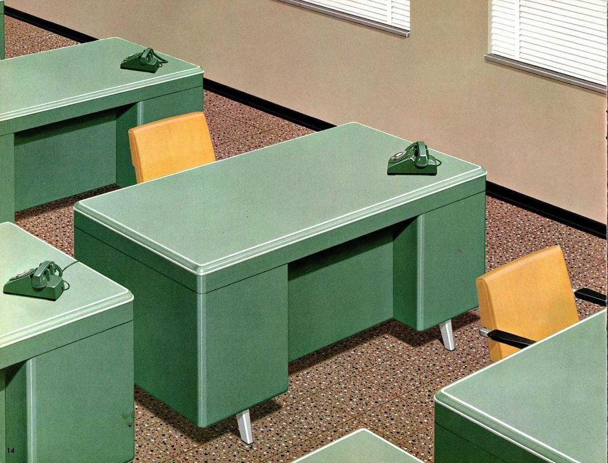

SelbstorganisationSelf-organisation
Rollen, Verantwortung und Entscheidungen im Team so verteilen, dass Selbstorganisation im Alltag funktioniert.Distributing roles, responsibility and decisions so that self-organisation works in everyday life.
THE GOOD CHANGEBeratungConsulting
Von der langfristigen Transformationsbegleitung über Workshops zu Teamarbeit bis zum Vortrag auf Eurem Event: Wir begleiten Organisationen auf dem Weg zu einer Kultur und Struktur, die das Leben in den Mittelpunkt stellt. From long-term transformation support to workshops on teamwork and talks at your event: we support organisations on the way to a culture and structure that put life at the centre.


01 · Für OrganisationenFor organisations
Wir begleiten Organisationen auf dem Weg zu einer Kultur und Struktur, die das Leben in den Mittelpunkt stellt. Angetrieben von New Work und ethischer Innovation unterstützen wir dabei:We support organisations in moving towards a life-centred culture and structure. Driven by new work and ethical innovation, we help with:
Mit wem wir arbeitenWho we work with
Mit Organisationen, die sich verändern wollen: Hierarchien abbauen, Entscheidungsmacht fair teilen, vielfältigere Teams aufbauen, psychologische Sicherheit schaffen und agile Strukturen für mehr Flexibilität etablieren.With organisations that want to change: breaking down hierarchies, sharing decision-making power fairly, building more diverse teams, creating psychological safety and establishing agile structures for more flexibility.
Unser Prozess in vier SchrittenOur 4-step process
02 · Für TeamsFor teams
Ausgewählte Trainings zu den Themen, an denen Zusammenarbeit am häufigsten hakt. Im Call klären wir Eure Ausgangslage und welches Format zu Eurem Team passt.Selected trainings on the topics where collaboration most often gets stuck. In a call we clarify your starting point and which format fits your team.
Rollen, Verantwortung und Entscheidungen im Team so verteilen, dass Selbstorganisation im Alltag funktioniert.Distributing roles, responsibility and decisions so that self-organisation works in everyday life.
Klare Kommunikationswege, Feedback und Gewaltfreie Kommunikation für eine Zusammenarbeit, die trägt.Clear communication paths, feedback and nonviolent communication for collaboration that holds.
Führung, die Orientierung gibt, Verantwortung teilt und Menschen darin unterstützt, ihr Bestes einzubringen.Leadership that gives orientation, shares responsibility and helps people bring their best.
03 · VorträgeTalks
Die Gründerin von THE GOOD CHANGE spricht auf Events, in Workshops und an Trainingstagen. Diese Themen liegen ihr besonders am Herzen.The founder of THE GOOD CHANGE speaks at events, workshops and training days. These are the topics she loves to talk about.
Anfrage sendenSend a requestWie wir beides nutzen, um Wirkung zu entfalten und selbst die Veränderung zu sein, die wir uns wünschen.How to use both to create impact and be the change we want to see in the world.
Von den Prinzipien der Natur lernen, um mit uns selbst, miteinander und mit der Umwelt so zu arbeiten, dass etwas zurückfließt.Learning from nature's principles to work with ourselves, each other and the environment in a way that gives back.
Werte in Strategie zu übersetzen ist nicht leicht. Ob Recruiting, Angebote, Produkte oder Kommunikation: Wir bringen Werte in jeden Teil der Arbeit.Translating values into strategy is hard. Whether recruiting, services, products or communication: let's bring values into every part of work.
Eine Berliner Agentur für Markenstrategie hat mit uns Rollen, Strukturen und Kommunikation von innen heraus neu aufgestellt.A Berlin brand strategy agency rebuilt its roles, structures and communication from the inside out with us.
Zum CaseSee the casePassen wir zusammen?Are we a good fit?
Der erste Schritt ist ein kostenloser Connection Call: 30 Minuten, um uns kennenzulernen und herauszufinden, wie THE GOOD CHANGE Dich oder Euer Team am besten unterstützen kann. The first step is a free connection call: 30 minutes to get to know each other and find out how THE GOOD CHANGE can best support you or your team.
Oder direkt:Or directly: hello@thegoodchange.co